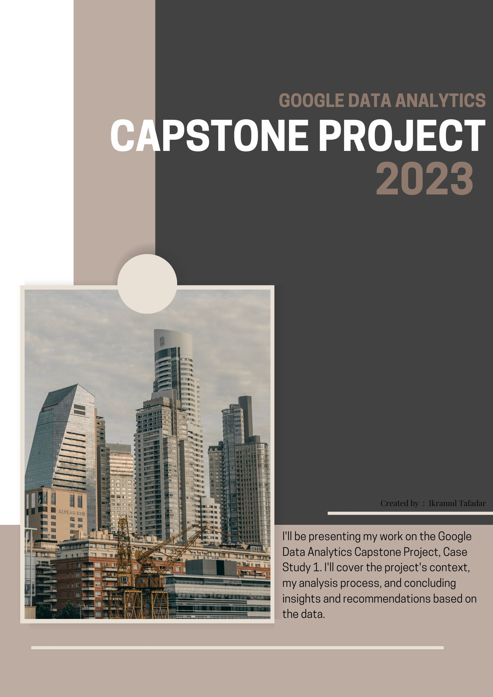
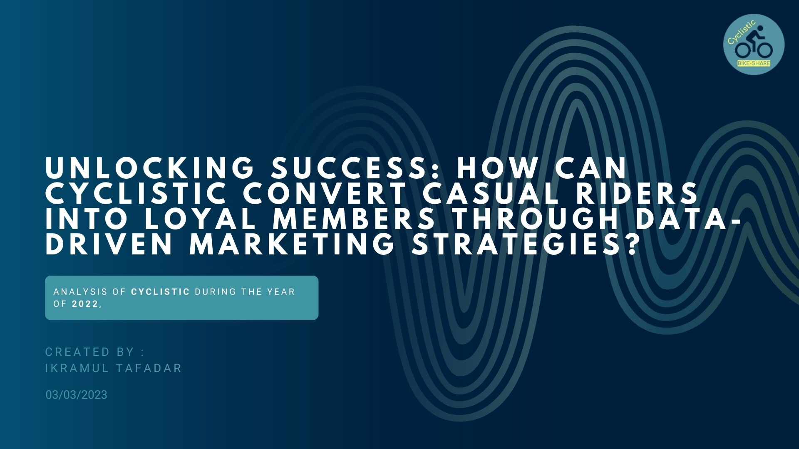

As a participant in the Google Data Analytics Capstone Project, I undertook Track 1, Case Study 1. In this report, I will present a comprehensive description of the project background, the entire process I employed for cleaning, analyzing, and visualizing the data, and the ultimate suggestions I formulated based on my analysis.


This presentation delves into the process of designing effective marketing strategies that aim to convert casual riders into annual members, which is essential for Cyclistic's sustained growth and success. It provides a thorough analysis of the differences in how annual members and casual riders use Cyclistic bikes, and offers recommendations based on this analysis to create targeted marketing approaches that encourage casual riders to become long-term, loyal members of Cyclistic.